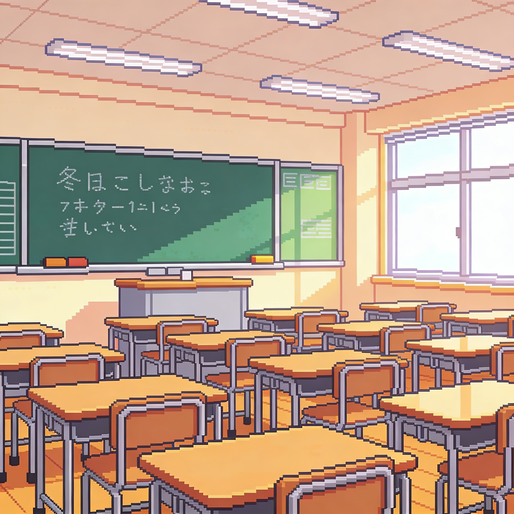
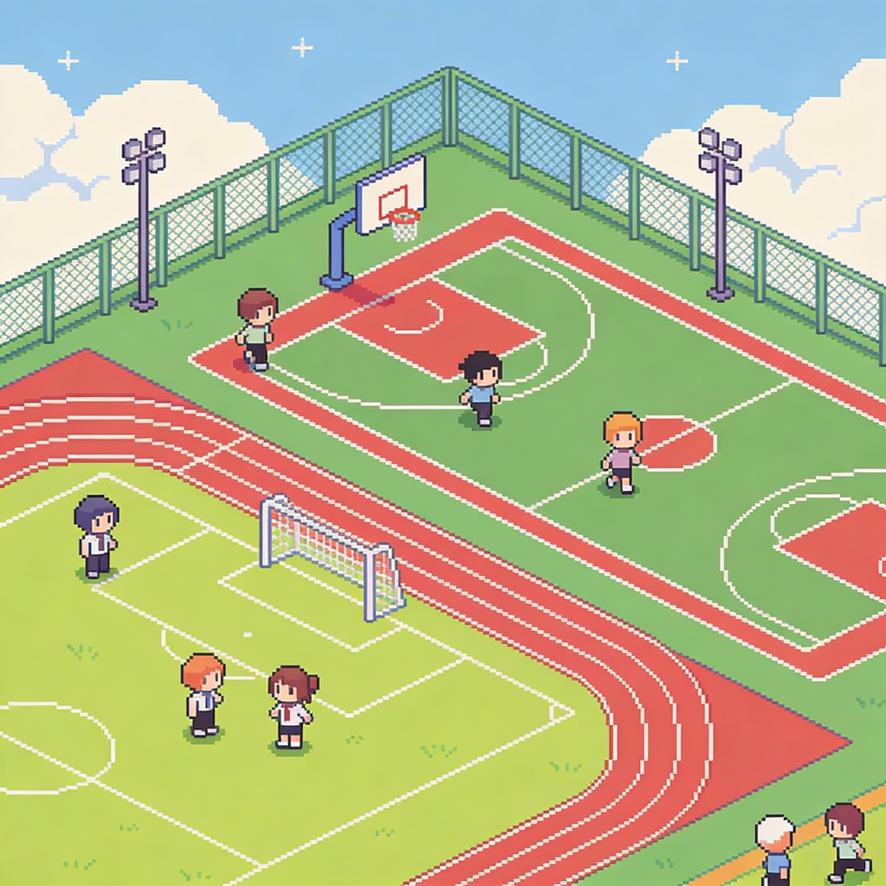

选择地图

教室
在充满知识的教室里学习，找出问题的正确答案，从而得分！

操场
在广阔的操场上奔跑，收集运动饮料和能量棒。注意不要碰到运动器材！

图书馆
在安静的图书馆中潜行，穿梭于书架之间，注意吃零食会被管理员发现！
在充满知识的教室里学习，找出问题的正确答案，从而得分！
在广阔的操场上奔跑，收集运动饮料和能量棒。注意不要碰到运动器材！
在安静的图书馆中潜行，穿梭于书架之间，注意吃零食会被管理员发现！